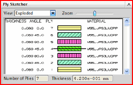

定义层片和堆叠顺序

不管是基于区域的处理还是基于层片的处理，都可以使用下列方法来创建层片并定义堆叠顺序：
-
从头开始创建层片、复制并移动
-
从电子表格或 CSV 文件导入
-
使用标准速写层合格式
对于基于层片的过程，还可以导入之前已在层合板建模器对话框中定义的铺层。
在创建铺层时，可以看到层片铺层列表中的层片和层片组，以及层片草图生成器组中铺层的图形表示。铺层的底部层片显示在框的底部，而顶部层片显示在框的顶部。默认情况下，从底部层片到顶部层片所定义的方向与壳单元的法向相同，并且壳单元节点直接位于层合板的中平面上。在层片草图生成器组中，层合板参考平面显示为一条黑色的水平实线。
